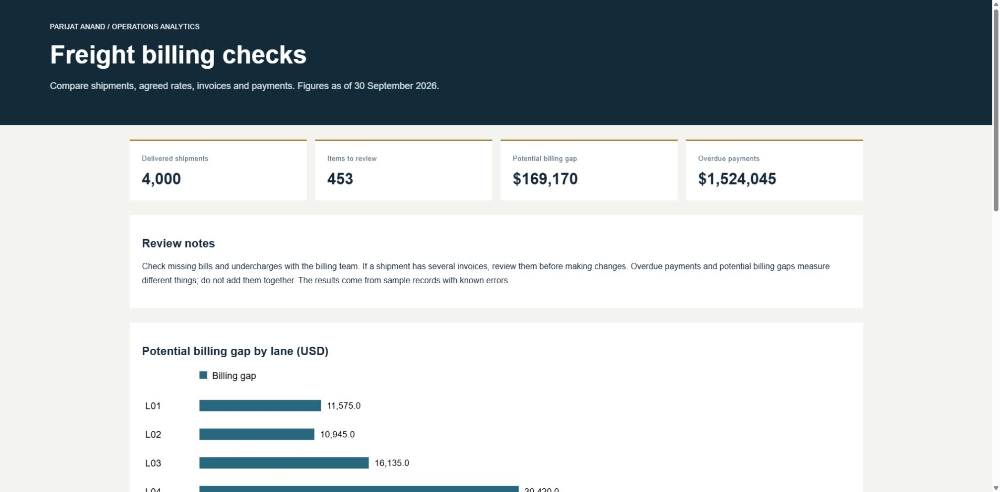

01 / Freight billing checks
Find the difference.
Checks shipments against agreed rates, invoices and payments. Missing bills and incorrect charges appear in one report, ready for review.
Freight billing checks01 / 04
Match shipmentsCheck amountsReview differences

Sample project · SQL · Python